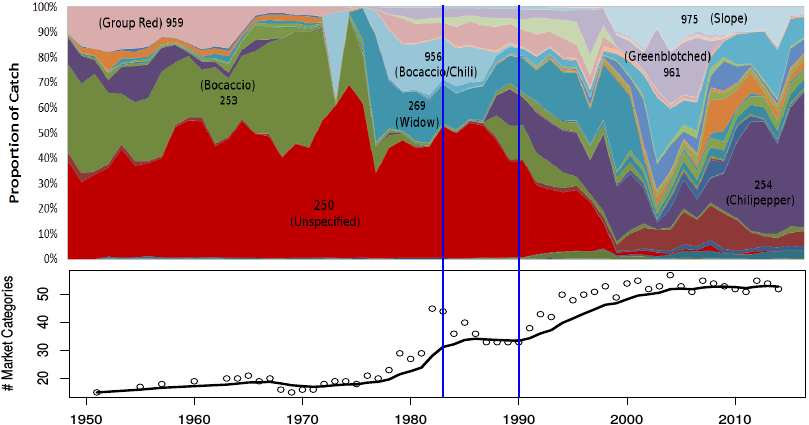
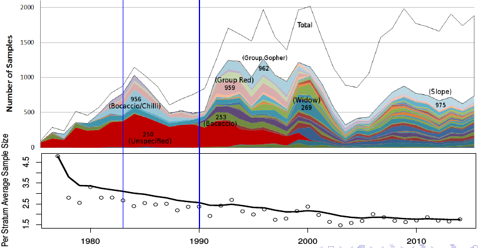

Given observed overdispersion relative to the Poisson and Binomial distributions, we have found the Beta-Binomial distribution to perform well as an observation model for these data. The linear predictor parameters,
In order to effectively manage exploited populations, accurate estimates of commercial fisheries catches are necessary to inform monitoring and assessment efforts. In California, the high degree of heterogeneity in the species composition of many groundfish fisheries, particularly those targeting rockfish (Sebastes), leads to challenges in sampling all market categories, or species, adequately. Limited resources and increasingly complex stratification of the sampling system inevitably leads to gaps in sample data. In the presence of sampling gaps, ad-hoc species composition point estimation is currently obtained according to historically derived “data borrowing” protocols which do not allow for uncertainty estimation or forecasting. In order to move from the current ad-hoc "data-borrowing" design-based point estimators, we have constructed Bayesian hierarchical models to estimate species compositions, complete with accurate measures of uncertainty, as well as theoretically sound out-of-sample predictions. Furthermore, we introduce a computational method for discovering consistent “borrowing” strategies across overstratified data. Our modeling approach, along with a computationally robust system of inference and model exploration, allows us to start to understand the affect of the complexly stratified, and sparse, sampling system, on the kinds of inference possible, while simultaneously making the most from the available data.
 
NOTE: Lots of stratum: market category, port, gear, year, qtr. Data becoming more and more sparse. reframe figures.
In the present sample-based methodology, data is required in each unique stratification of the system to obtain any estimate. Given the complex, and numerous, stratification of this system, many stratum do not have observations, and thus inference is not possible without some sort of stratum pooling. Pooling data will naturally increase the bias of the resulting estimates, but when no other data is available, a slightly biased estimate is better than no estimate at all. In the current state of affairs, a "historically" derived set of pooling rules have been implemented across ports when no other data is available. The "historical" pooling rules are largely based on personal experience with the sampling process, although quantifiable evidence for the implemented rules have been hard to produce until recently.
Rather than relying so heavily on intangible pooling rules which change based on the availablity of samples. We hope to standardize any necessary spatial pooling thru an exhaustive search of the space of pooled models.
For a particular market category, is the
sample of the
species’ weight, in the
port, caught with the
gear, in the
quarter, of year
. In accordance with the typical model based statistical procedure, the
are said to be observations from a statistical distribution
conditional on some parameters
and
.
Given observed overdispersion relative to the Poisson and Binomial distributions, we have found the Beta-Binomial distribution to perform well as an observation model for these data. The linear predictor parameters, , are then factored as follows among the many stratum,
is a correlation parameter among the stratum, which gives the Beta-Binomial added flexibility for modeling overdisperse data.
As a Bayesian model, we specify any information external to the dataset, thru our priors on the parameters, . Our priors are largely diffuse normals, representing relatively little prior information, producing behavior similar to classical fixed effect models on species (
), port (
), and gear (
) parameters. Our priors on time parameters (
) are modeled similarly to a classical random effects model, which uses the data to estimate a shared variance among all year-quarter interaction terms. Such a hierarchical prior thru time, imposes the prior information that data thru time share some degree of similarity, however the exact degree of similarity is not specified, rather the degree of similarity among time parameters is itself a parameter to be estimated from the data.
In the past such models have been difficult to fit, due to relatively slow, unparallelizable, Markov Chain Monte Carlo (MCMC) sampling methods of inference. In recent years, inference on these models has become faster thru the use of computational Laplace approximations (Rue et al., 2009), as distributed thru the R-INLA package (Rue et al., 2013). Of primary note, the INLA method of inference is largely parallelizable, and does not rely on the subjective process of determining Markov chain convergence. Together the parallelizable and "hands-off" nature of INLA inference allows for automated model exploration.
With the added ability to automate Bayesian model exploration, we desire to explore the space of pooled models with the hope of obtaining quantitative evidence of optimal pooling behavior in space. Furthermore as resources allow, model exploration could easily extend across any other difficult modeling decisions which may represent significant sources of model uncertainty. The space of possible pooled models is well defined in terms of the size of the set of items to be partitioned, , as described by the Bell numbers (
),
The most straight-forward solution in the presence of this type of model uncertainty is to simply compute all possible pooling schemes. However, practically speaking, not all pooling schemes necessarily represent biologically relevant models. For example, perhaps it is reasonable to pool only among adjacent ports (perhaps not), similarly it may be reasonable to assert that biologically similar regions can only possibly extent across a relatively small number of ports (if so, how many?).
Each of these hypotheses are easily represented as subsets of the total model space, , as seen in Figure (1). An exhaustive search of the models in these subspaces, and a comparison of the relative predictive accuracy of each model, provides concrete quantitative support for, or against, each of these hypotheses. Thru this technique of exhaustive search and measuring relative predictive accuracy, we are able to understand the system to a greater degree than before possible. Furthermore such an exhaustive search of these model spaces allows for even more accurate estimates of species composition, and uncertainty, through the use of Bayesian model averaging among the candidate models. Bayesian model averaging allows us to account for model uncertainty around these difficult modeling decisions, while combining the respective predictive capabilities of each model of a given subset of model space.
represents the total number of models in the model space of pooled models among
ports in a single market category. The colored lines represent different pooling hypotheses, which represent subsets of the models in
and show how model exploration would scale with each hypothesis.
Once all of the models of a given model space are computed, combining them to account for model uncertainty thru Bayesian model averaging is straight forward. For the model, of model space
, a straight forward implementation of Bayes theorem gives,
Where is the posterior probability that model
is the true data generating model of the data, conditional on the subspace of candidate models and the observed data.
is then straightforwardly used to average together the posteriors of all of the candidate models, as follows
The above described system is already built and running on 2x12 core processors. As a relatively small scale test we have considered the directly adjacent pooling possibilities among 5 port complexes at a time, along the coast of California (10 total port complexes), for all market categories. Thus we were able to compute in approximately a month of wall clock time running with 24 fold parallelism. Since this work is almost entirely trivially parallelizable we have observed near linear speedup as we have made the code mode parallel within our current capabilities.
Given our current computational resources it is not practically feasible to attempt explorations that involve many more models than we have already accomplished. However with access to more parallel infrastructure we foresee the ability to scale our current code with little modification. The relevant variables determining run time are the size of the data, the number of parameters per model, and total number of models to consider. Since the data and the maximum number of parameters per model are constants for a given , and for large
, work is overwhelmingly dominated by the number of possible candidate models (models are trivially parallelizable), we believe that scaling will not be difficult as the number of available processors increases.
Rue, H., Martino, S., & Chopin, N. (2009). Approximate Bayesian inference for latent Gaussian models by using integrated nested Laplace approximations. Journal of the royal statistical society: Series b (statistical methodology), 71(2), 319-392.
Rue H, Martino S, Lindgren F, Simpson D, Riebler A (2013). R-INLA: Approximate Bayesian Inference using Integrated Nested Laplace Approximations. Trondheim, Norway. URL http://www.r-inla.org/.